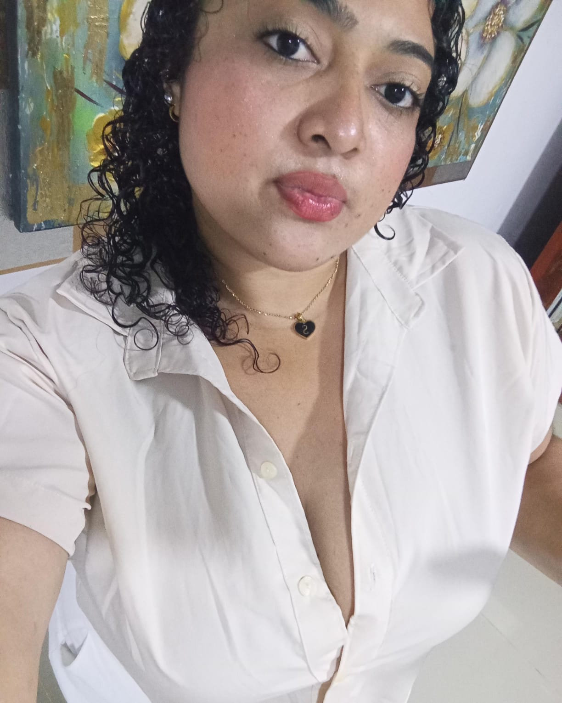
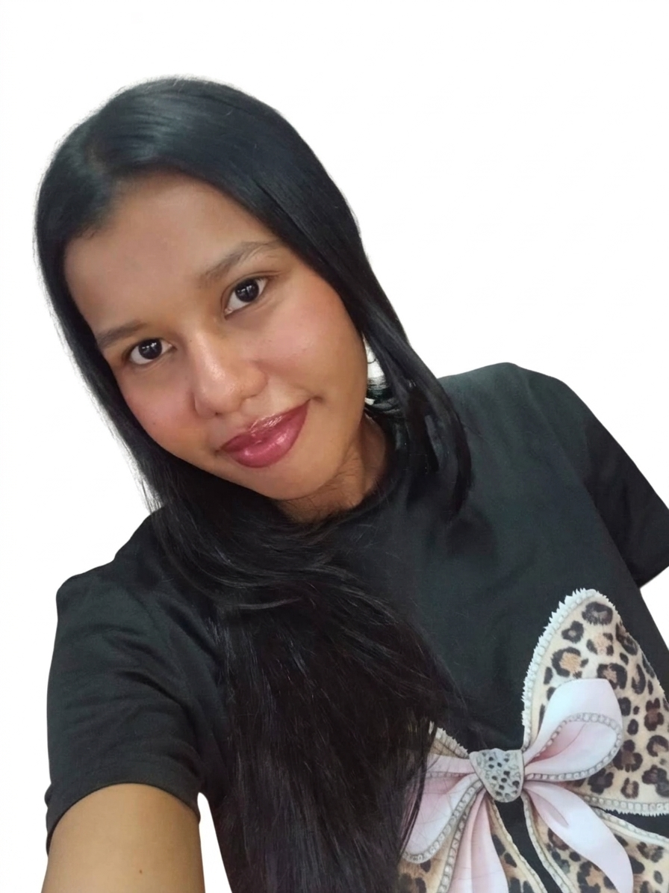
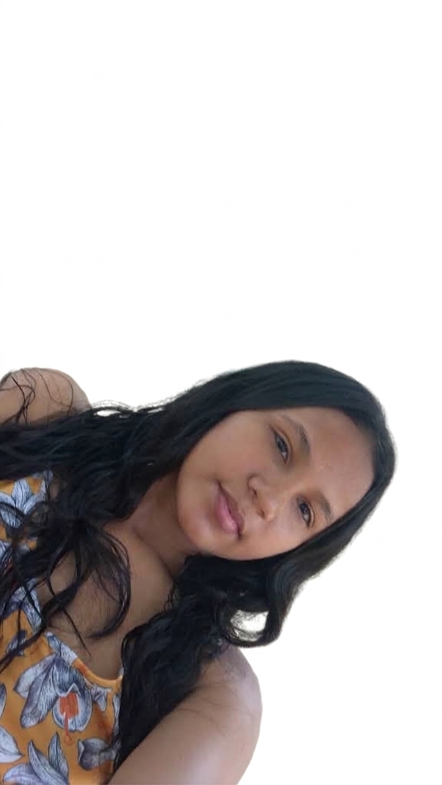

Un recorrido por las transformaciones sociales, culturales, educativas y jurídicas en la manera de comprender a los niños y las niñas.
Esta página web presenta el proceso de construcción histórica de las infancias y diferentes características que permiten reconocer cómo ha cambiado la manera de identificar a los niños y niñas a través del tiempo. Mediante las distintas pestañas se presentarán temas relacionados con las infancias, sus contextos, desafíos, realidades y las posibilidades de transformación. Esto se irá desarrollando de manera progresiva durante todo el curso.



Contexto social: Las sociedades antiguas estaban organizadas de manera jerárquica. La familia, la autoridad y las diferencias sociales tenían gran importancia. La vida de los niños dependía de su posición social y de las funciones que se esperaba que cumplieran dentro de la familia y la comunidad.
🎭 Contexto cultural: Las creencias religiosas, las tradiciones y las costumbres orientaban la vida cotidiana. La educación estaba relacionada con los valores de cada sociedad, como la disciplina, la obediencia, la formación para la vida pública o la preparación para desempeñar determinados roles.
👧 Concepción de las infancias: La infancia no se entendía de la misma manera que hoy. Los niños eran vistos principalmente desde las necesidades y expectativas de los adultos y de la sociedad. La experiencia infantil variaba según el género, la familia y la condición social.
Contexto social: La sociedad medieval estaba marcada por relaciones de dependencia, diferencias estamentales y una fuerte influencia de la Iglesia. La familia y la comunidad tenían un papel central en la transmisión de costumbres y formas de vida.
📜 Contexto cultural: La religión cristiana tuvo una gran influencia en los valores, la educación y las costumbres de gran parte de Europa. La enseñanza estuvo vinculada a instituciones religiosas y a la transmisión de conocimientos, normas y valores.
🧒 Concepción de las infancias: La experiencia de niños y niñas dependía de su familia y condición social. En muchos casos, desde edades tempranas participaban en tareas domésticas, agrícolas o de aprendizaje de oficios. La infancia no era reconocida como una etapa universal con las características que hoy le atribuimos.
Contexto social: Se produjeron cambios políticos, económicos y culturales asociados al Renacimiento, la expansión de los Estados y nuevas formas de pensamiento. Poco a poco aumentó el interés por la educación y por comprender las características particulares de la niñez.
🔭 Contexto cultural: El humanismo, la expansión de la cultura escrita y nuevas ideas sobre la persona favorecieron una mayor atención a la educación. Se fortaleció la reflexión sobre cómo enseñar y formar a los niños de acuerdo con sus características.
🌱 Concepción de las infancias: Comenzó a consolidarse una visión de la infancia como una etapa particular del desarrollo que requería formación y cuidado. Aunque persistieron desigualdades, surgieron nuevas preocupaciones por la educación y el desarrollo infantil.
Contexto social: La escolarización se amplió y los cambios sociales y económicos llevaron a nuevas discusiones sobre educación, protección y bienestar infantil. Las desigualdades continuaron existiendo, pero aumentó el reconocimiento social de las necesidades de la niñez.
⚖️ Contexto cultural: Las ideas pedagógicas y psicológicas dieron mayor importancia al desarrollo, el aprendizaje, el juego, la protección y la participación. La infancia empezó a entenderse como una etapa con características propias y no únicamente como preparación para la adultez.
🫶 Concepción de las infancias: Se avanza hacia una comprensión plural: no existe una sola manera de vivir la infancia. Las condiciones familiares, culturales, sociales y territoriales generan experiencias diversas.
🧠 Autores y aportes:
• María Montessori: desarrolló una propuesta educativa centrada en la autonomía, el ambiente preparado y la actividad del niño.
• Jean Piaget: estudió el desarrollo cognitivo y mostró que los niños construyen conocimientos de manera progresiva.
• Lev Vygotsky: resaltó la importancia de la interacción social y cultural en el aprendizaje y el desarrollo.
⚖️ Transformaciones e hitos normativos: Durante los siglos XX y XXI se fortalecieron normas y acuerdos internacionales para la protección de la niñez. Un hito fundamental fue la Convención sobre los Derechos del Niño de 1989, que consolidó el reconocimiento de niños y niñas como sujetos de derechos.
Al observar el recorrido histórico, se puede reconocer un cambio progresivo: de concepciones centradas principalmente en las expectativas de los adultos y en el lugar social asignado a los niños, hacia una comprensión de las infancias como experiencias diversas y hacia el reconocimiento de niños y niñas como sujetos de derechos.
Conocer la historia de las infancias permite comprender que las formas de educar no son iguales en todos los tiempos ni en todas las culturas. Para la educación infantil actual es importante reconocer las características, necesidades, voces, contextos y derechos de cada niño y niña.
La historia de las infancias muestra que la manera de entender a los niños y las niñas ha cambiado de acuerdo con las condiciones sociales, culturales y educativas de cada época. Este recorrido permite valorar los avances logrados en materia de protección, educación y derechos, pero también reconocer que todavía existen situaciones de desigualdad y exclusión.
Como futuras educadoras infantiles, conocer estas transformaciones nos ayuda a evitar prácticas que desconozcan la voz o la dignidad de los niños. También nos invita a reconocer la diversidad de las infancias, promover su participación y construir ambientes educativos donde cada niño y niña sea escuchado, respetado y acompañado en su desarrollo.
La construcción histórica de las infancias permite comprender que la idea de niño, niña y niñez no ha sido siempre la misma. Las transformaciones sociales, culturales, pedagógicas y normativas han contribuido a reconocer progresivamente a los niños y niñas como personas con necesidades, capacidades y derechos. Por ello, estudiar esta historia es fundamental para fortalecer una educación infantil respetuosa, inclusiva y comprometida con la dignidad y el bienestar de las infancias.
Este apartado reunirá miradas, enfoques y perspectivas teóricas para comprender las infancias desde diferentes disciplinas y contextos.
Su contenido se irá desarrollando de manera progresiva durante el curso.
✨ PRÓXIMAMENTE ✨En esta pestaña se abordarán las realidades, contextos y desafíos que atraviesan las infancias en la actualidad, así como las problemáticas que requieren atención y transformación.
Su contenido se irá desarrollando de manera progresiva durante el curso.
✨ PRÓXIMAMENTE ✨Este espacio dará lugar a las voces de los niños y las niñas, así como a propuestas y acciones orientadas a transformar las realidades de las infancias.
Su contenido se irá desarrollando de manera progresiva durante el curso.
✨ PRÓXIMAMENTE ✨Ariès, P. (1987). El niño y la vida familiar en el Antiguo Régimen. Taurus.
Comenio, J. A. (1986). Didáctica magna. Porrúa.
Rousseau, J.-J. (2000). Emilio o de la educación. Alianza.
UNICEF. (1989). Convención sobre los Derechos del Niño.